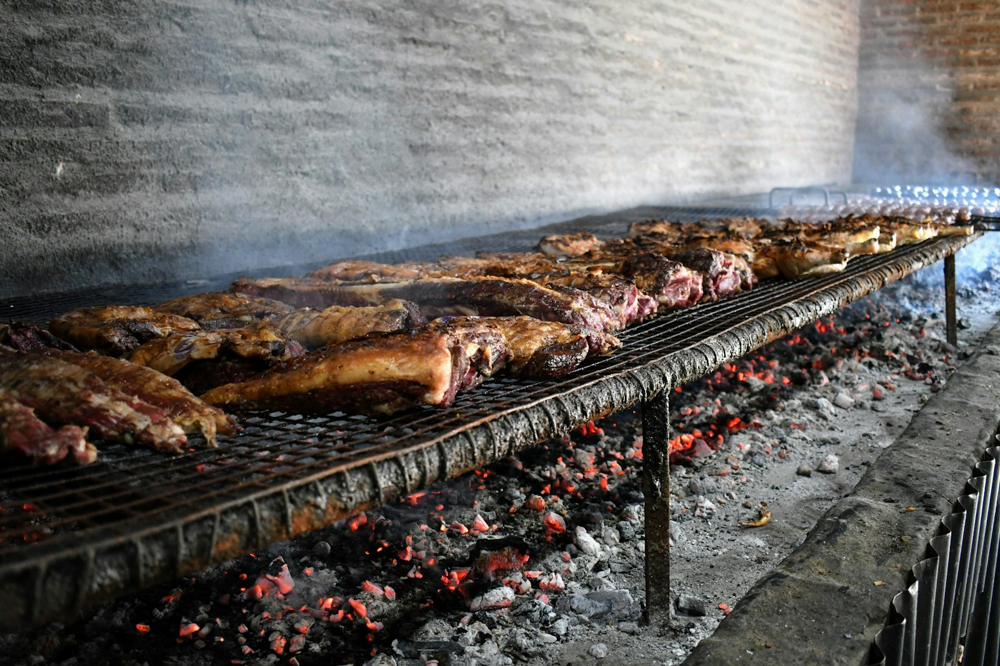
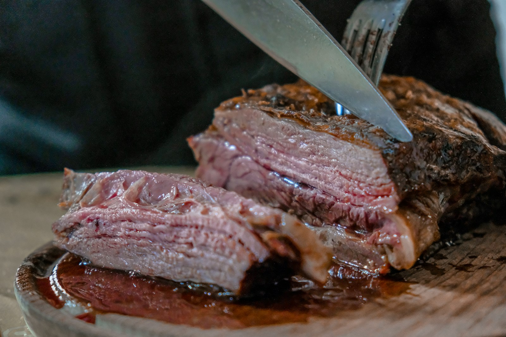
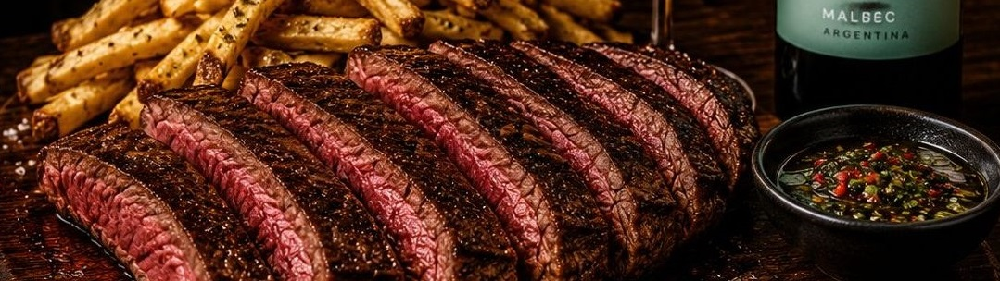

Bife de cuadril
Lendebiefstuk
€ 23,75
- 200 gr € 19,75
- 300 gr € 23,75
- 400 gr € 28,75
- 500 gr € 34,75

Gevers Deynootplein 120 · Scheveningen
De Argentijn eet niet, hij geniet.
De Argentijn eet niet, hij geniet. Hij geniet van de romantiek en de warmte van la parrilla, de tafel-grill. Hij geniet van het Argentijnse vlees.
Argentijns Grill Restaurant Santos bereidt alleen het allerbeste, vetarme vlees van twee tot drie jaar oude stieren, op natuurlijke wijze grootgebracht op de Argentijnse graslanden.
Geen enkel probleem! Santos biedt de visliefhebber een aantal overheerlijke visgerechten, van zalm tot kreeft. Natuurlijk vers klaargemaakt op de grill. Vegetariërs zullen zich verbazen over de heerlijke, Argentijnse groenteschotels.


Het weekend begint bij Santos
Er is iets bijzonders aan een echte Argentijnse asado: het brengt mensen samen. Geen haast, geen tijdsdruk, gewoon goed eten, een glas wijn, en de mensen om wie je geeft aan één tafel.
Bij Santos grillen we de Colita de Cuadril, een typisch Argentijns stuk rundvlees: mals, vol van smaak en gemaakt om te delen. Precies het soort gerecht waar je rustig de tijd voor neemt, terwijl de middag vanzelf voorbijglijdt.
En het mooiste? Je hoeft niet tot ’s avonds te wachten. Onze Asado y Vino staat het hele weekend voor je klaar: een ontspannen lunch met familie of vrienden, midden op de dag.
Bel ons of stuur een mail, dan zetten wij een tafel voor u klaar aan het Gevers Deynootplein.

Wilt u thuis genieten van een heerlijke steak? Bijna al onze gerechten kunnen aan huis worden geleverd. Desgewenst met een Zuid-Amerikaans biertje of een goede fles wijn. Bestel online en u krijgt onze gerechten razendsnel bezorgd: thuis, op het werk of waar u maar wilt.
Te bestellen via Deliveroo en Uber Eats.
U kunt uw favoriete Argentijnse gerechten ook bij ons afhalen. Even bellen naar 070 354 51 98, of stuur een mailtje naar reservas@santos.nl.
| Bestellen | Afhalen | |
|---|---|---|
| Maandag – donderdag | 16:00 – 21:30 | 16:00 – 22:00 |
| Vrijdag – zondag | 12:00 – 21:30 | 12:00 – 22:00 |
Geef iemand een avond aan la parrilla cadeau.
| Maandag – donderdag | 16.00 – 24.00 uur |
|---|---|
| Vrijdag – zondag | 12.00 – 24.00 uur |
26 december open van 12:00 – 24:00 uur
31 december open van 12:00 – 21:00 uur
In de directe omgeving is volop gelegenheid uw auto te parkeren, volg hiervoor de P-borden.
Ons restaurant is ook eenvoudig met openbaar vervoer te bereiken. Bus 21, 22 en 23 en tram 1 en 9 stoppen vlakbij het restaurant: halte Kurhaus.
Personeel gezocht! We zijn op zoek naar gemotiveerd personeel voor in de bediening, een ervaren of aankomend grillchef en personeel voor in de keuken.
Interesse? Stuur je cv en motivatie naar jobs@santos.nl. Wil je eerst meer informatie? Bel dan tussen 12:00 en 16:00 uur naar 070 354 51 98 en vraag naar Atalay Celik (restaurantmanager). Je kunt ook gerust eens bij ons binnenlopen.